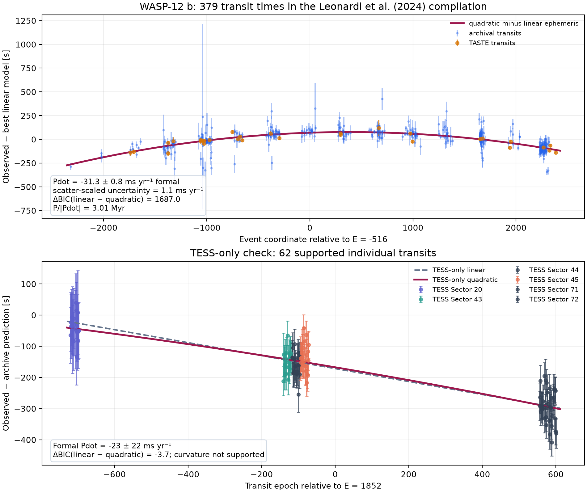
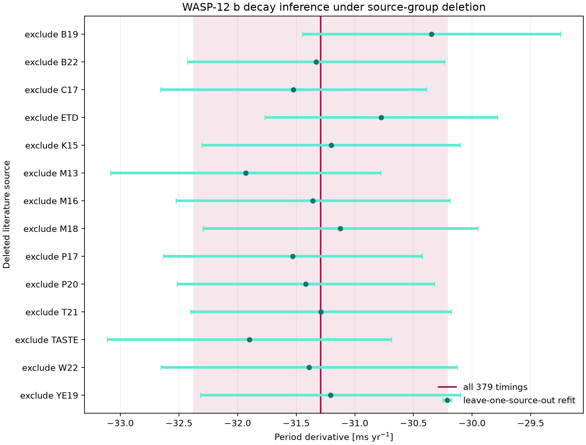
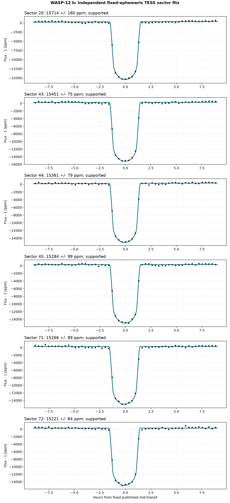
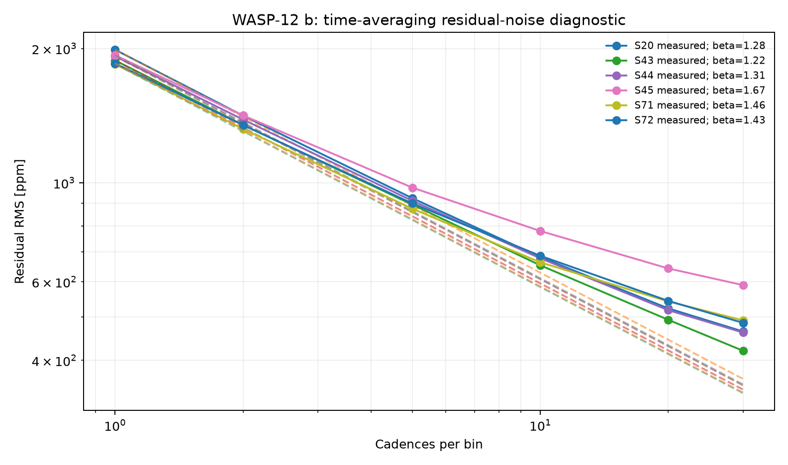
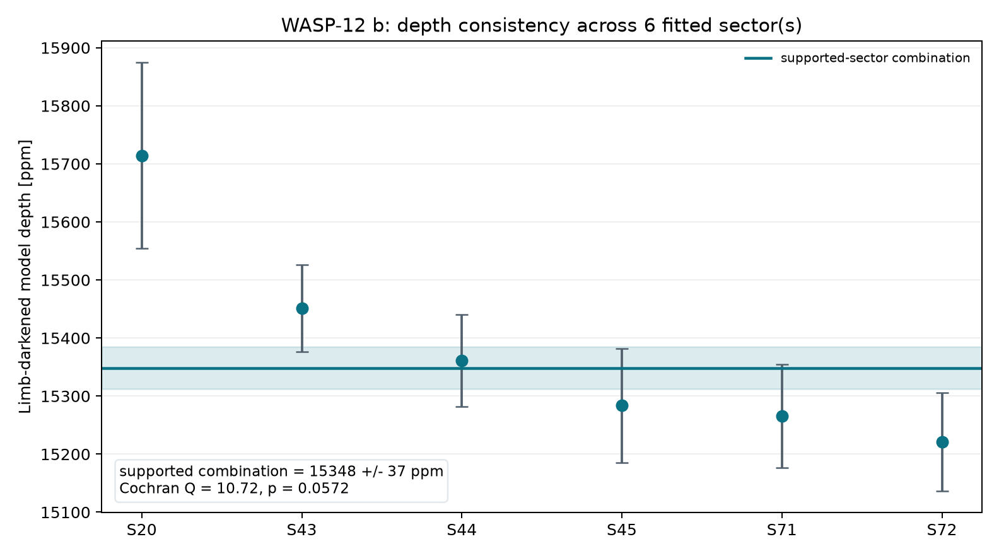

Archive
Version the verbatim VizieR response and six unmodified TESS FITS products.
WASP-12 b · orbital timing dossier · version 2.0
A source-audited recalculation of one of exoplanet science’s clearest orbital-decay cases—using 379 public transit times, an independent transit-and-occultation model test, and six homogeneous TESS sectors.
A weighted quadratic ephemeris fitted to the complete 379-row VizieR compilation gives Ṗ = −31.29 ± 0.76 ms yr⁻¹ formally. The quadratic model improves BIC by 1687 relative to a linear ephemeris.
The fit has χ²/dof = 2.04, so the public headline uses a scatter-scaled uncertainty of ±1.09 ms yr⁻¹. Error inflation is not a covariance model, but it prevents the diagonal formal error from being presented as the whole uncertainty story.

Transit curvature alone is not the decisive physical discriminator. Occultations should shift oppositely under apsidal precession, so the older 158-event transit-and-occultation set is retained for an explicit alternative-model check.
| Test | Result | Interpretation |
|---|---|---|
| Quadratic vs linear | ΔBIC = 202.52 | Strong curvature in the Yee et al. set |
| Quadratic vs apsidal proxy | ΔBIC = 20.16 | Quadratic decay preferred |
| Proxy search window | 5–100 yr | Best fit approaches the upper boundary; proxy period is not interpreted |
| Published physical comparison | ΔBIC = 22.3 | Yee et al. also preferred decay and used radial velocities to reject a Rømer explanation |
The proxy solves an opposing-sign sinusoid over a declared precession-period interval. It is useful as a transparent falsification test, not as a replacement for a small-eccentricity physical posterior.
Deleting each source group represented by at least five measurements leaves Ṗ between −31.93 and −30.35 ms yr⁻¹. Every refit still gives ΔBIC > 1293 in favor of quadratic curvature.

All six target-specific 120-second SPOC sectors produce supported transit fits. The 119 event mid-times give a conditional Ṗ = −22.6 ± 21.5 ms yr⁻¹, while BIC still prefers the linear TESS-only ephemeris by 3.68. That result is correctly treated as insufficient.
The independent TESS subset is consistent with the established decay scale but does not detect curvature on its own. Consistency is not confirmation when the uncertainty is this broad.



Version the verbatim VizieR response and six unmodified TESS FITS products.
Require every scientific input to match its documented SHA-256 digest.
Center event coordinates before weighted fits to control polynomial conditioning.
Evaluate linear, quadratic and opposing-sign sinusoidal timing models with BIC.
Delete source groups and report both formal and scatter-scaled uncertainty.
Keep new TESS photometry distinct from the literature timing reproduction.
The 379-row VizieR response, 158-event Yee compilation, six TESS light curves, and the saved NASA Exoplanet Archive row are documented in SOURCE.md.
Download the model statistics, source-deletion table, TESS event timings, and sector fits.
pip install -r requirements.txt python scripts/analyze_transit.py python scripts/analyze_multisector.py python scripts/analyze_orbital_decay.py pytest tests/ -v